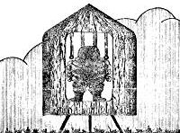

A Thin-le-Moutiers (Isère) une femme voit une soucoupe volante se poser à 30 m
et s'évanouit. Elle souffre par la suite d'une maladie de peau Vallée 1966, 53.
(dimanche 17?) A Cier de Rivière (Haute Garonne, France), Guy Puyfourcat (22 ans),
revenant des champs, conduisant une jument par la bride, est surpris de constater que l'animal est nerveux.
Émergeant du bas-côté de la route, 1 objet gris, d'environ 1,5 m de diamètre, les survole. La jument s'élève comme
"aspirée" à une hauteur de 3 m et le témoin doit lâcher la bride. Puis l'animal tombe comme une masse et est
incapable de se mouvoir pendant , comme assommé. Enfin elle se lève et essaie de marcher, mais est
toute tremblante de peur. L'objet s'est envolé, depuis longtemps à grande vitesse. Le témoin lui-même n'a
strictement rien ressenti Sud-Ouest, novembre 1954 < Vallée, J.: Anatomy of a
Phenomenon, 1965Lagarde, F.: "Une Jument s'Envole au Départ d'un M.O.C",
LDLN n° 109, 1970-12,pp. 17-18.
A Mazaye (Puy-de-Dôme, France), M. Bachelard conduit une
camionnette sur la route D52, entre Chanat et Courhay, lorsque
soudain le moteur semble ralentir et il se sent "paralysé". Il voit alors dans un champ proche de la route 1 objet
brun d'environ 10 m de long, 2,5 m de haut, silencieux, n'émettant aucune lumière et sans ouverture Combat, La Croix, 20 octobre 1954.
A Baillolet (France), le docteur Robert, qui traverse ce village en voiture, voit 4 objets à environ 300 m d'altitude, volant
lentement en formation. Soudain, l'un d'eux tombe au sol avec un mouvement de feuille morte à 10 m du
témoin qui ressent une décharge électrique alors que son moteur s'arrête, ses phares s'éteignent et la voiture
stoppe alors que l'objet touche le sol. Incapable de se mouvoir, le témoin voit une silhouette d'environ 1,20 m de
haut se mouvoir dans la lumière de l'objet, puis tout devient noir. Quelque temps plus tard les phares se rallument
d'eux-mêmes et le témoin voit le phénomène s'envoler vers le nord Paris-Presse, 19 octobre 1954.
Un bolide traverse le nord de la France, observé sur une vingtaine de départements par des milliers de
personnes, depuis l'Allier jusqu'à la Lorraine et de la frontière Suisse à Paris. De nombreux témoins disent
avoir vu une soucoupe volante. Les journaux impriment "Soucoupe Volante à Orly", ou à Montididier,
Sedan "La 'soucoupe' qui a plané samedi soir sur Sedan a été photographiée", L'Ardenais, 19 octobre 1954"Le disque photographié à Sedan a été aperçu à Attigny", L'Ardenais, 23 octobre 1954,
Metz Michel, A.: Mystérieux objets célestes, Seghers éditeur, 1958, p. 244.
A Dompierre-Bequincourt (Somme, France), MM. Deschamp et Laclotre voient 1 engin d'environ 20 m de diamètre,
de 2 m de haut, qui approche du sol à 4 m d'altitude pendant 3 ou 4 mn. Il émet une lumière jaunâtre et une lueur
d'environ 4 m s'étend autour de l'objet lui-même Vallée, J.: "Un siècle d'atterrissages", LDLN n° 43Le bolide de 21:30 ?.
A Saint-Cyr-sur-Mer (Provence Côte d'Azur, France), plusieurs personnes voient 1 objet
posé dans une prairie. Il apparaît phosphorescent et de grande taille. Il s'envole d'une manière très soudaine Il Tempo, Il Messagero, 16 et 17 octobre 1954.
Illustration du "bonhomme michelin" rapporté par les Mozin LDLN n° 191, p.34

Entre Avesne (Nord) et Louvroil sur la Route Nationale 2 qui
joint Paris à Bruxelles, M. et Mme Mozin reviennent en voiture d'une visite chez des
parents à Dourlers. La route est vide, le temps est proche du gel et sec, le ciel était
clair, ils roulent à 120 km/h. M. Mozin attire l'attention de son épouse sur des lueurs
dans la campagne, en haut d'une petite côte, à une distance qu'ils ont estimée à 800 m d'eux, et dit qu'il pense
qu'il y a eu un accident. La distance est rapidement franchie par la voiture et quand ils sont au sommet de la côte,
ils découvrent à 100 m d'eux sur le côté droit de la route un engin posé au sol, qui a une forme cylindrique faisant
dans les 2 m de diamètre avec un cône de faible hauteur au sommet. A ce moment, les phares de la voiture se sont
éteints spontanément tandis que le moteur à continué à fonctionner normalement. M. Mozin a toutefois freiné à ce moment et la vitesse de la voiture est ramenée à 70 km/h. En
continuant à rouler, ils sont arrivés à quelque 4 ou 5 m de l'objet. De cette distance, ils peuvent voir que l'objet
repose sur des pieds. Les pieds semblent avoir 30 cm de haut environ. Il a un aspect blanc comme de la tôle
galvanisée et des lignes verticales espacées de 10 cm sur sa paroi. L'engin a une large ouverture, et dans
l'encadrement de cette ouverture, qui semble dépourvue de porte, une silhouette qui paraît se déplacer lentement et
qui évoquera pour eux la silhouette du bonhomme Michelin. Cet être leur semble haut de 1,20 m, très gros,
large de 0,90 m à 1 m, avec des boudins autour des bras et des jambes, chaussé de grosses bottes et portant un
casque volumineux presque aussi large que ses épaules. Son visage n'est pas apparent. Il semble se déplacer
légèrement et très lentement, comme pour se préparer à sortir, en traînant ses pieds qui paraissent chaussée de
lourdes bottes. Ses mains ne sont pas distinguées. La luminosité de l'ouverture se diffuse jusque sur la route,
l'intérieur de l'engin semble d'un blanc intense non éblouissant. Des sortes de conduits ou de gros câbles
descendent dans l'engin en son intérieur et des sortes de poignées ou commutateurs sont vus. Quand la voiture a
dépassée l'objet d'une centaine de mètres, ses phares se rallument spontanément. M. Mozin arrête alors la voiture, décidé à aller voir l'objet de près à pied, mais son épouse
apeurée l'en dissuade et ils reprennent la route et gagnent leur domicile à Maubeuge. Ils n'assistent donc pas au
départ de l'engin.